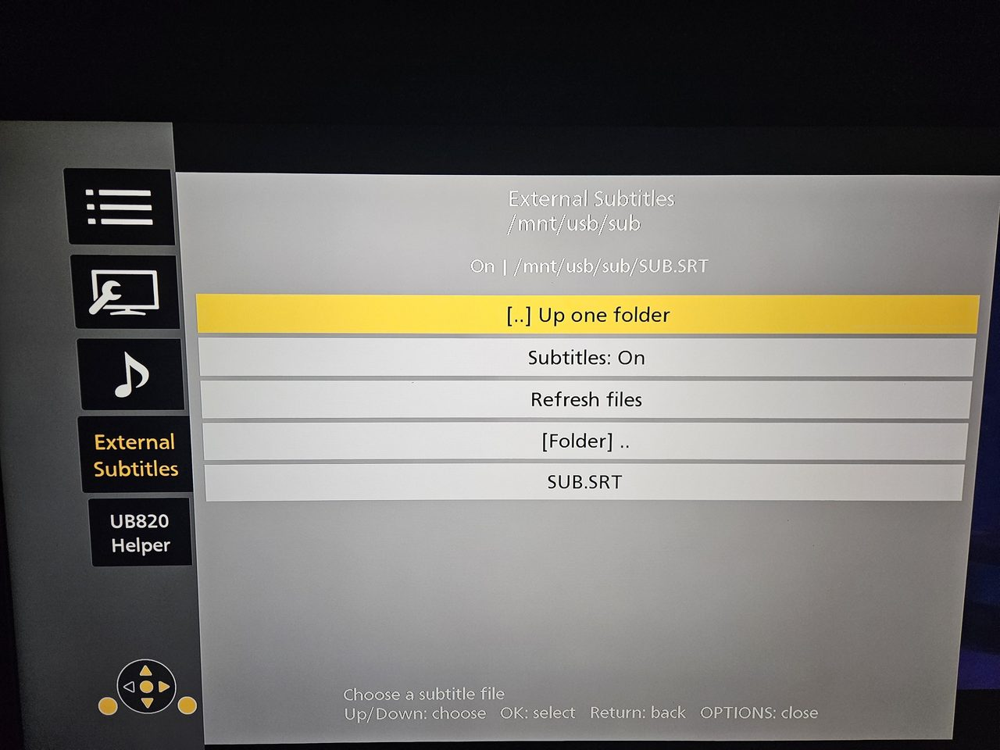
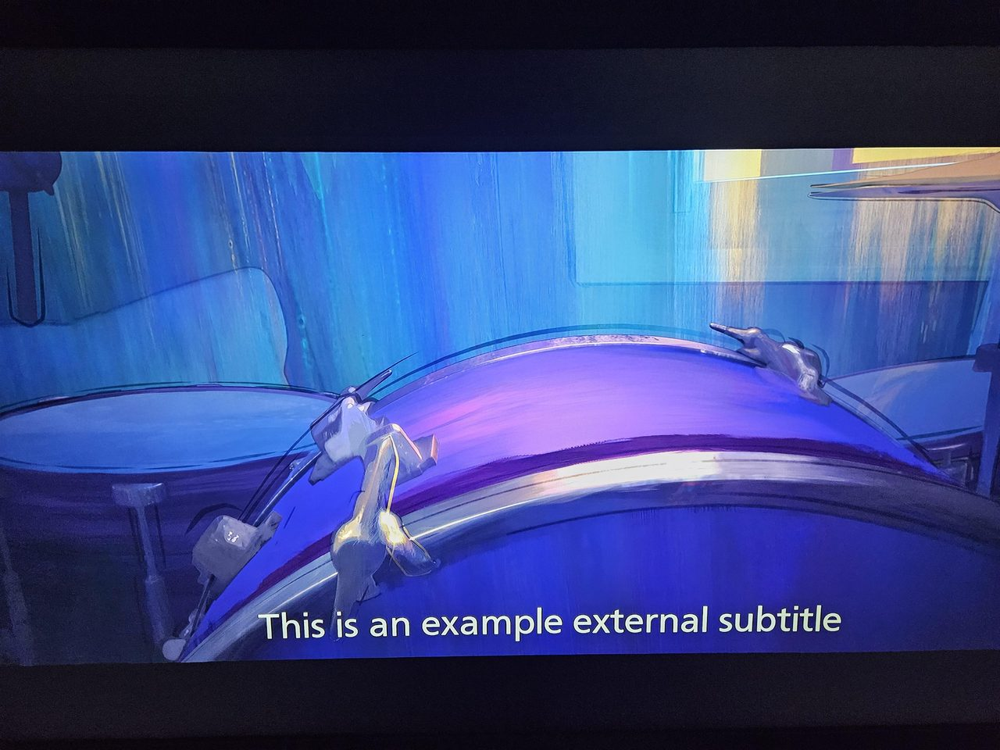
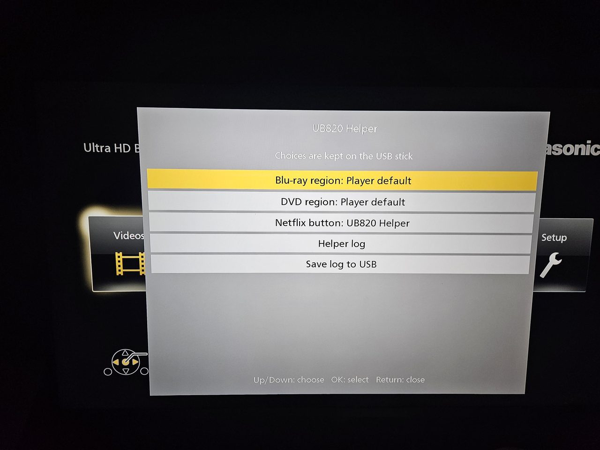

UB820 Helper
External .srt subtitles and extra settings for the Panasonic DP-UB820,
with support for firmware 1.82 and 1.85. The helper runs in RAM;
saved preferences stay on the USB stick. It does not install custom firmware.
Choose subtitle files during playback and adjust their size, position, timing and brightness. UB820 Helper adds disc region choices and other settings. The Netflix button opens Helper over the home screen, menus or a film. On remotes without that button, use Player Settings > System > UB820 Helper.
Download 0.2 and release notes · Configuration
 |
 |
| Browse folders in OPTIONS > External Subtitles | The selected subtitle file during a film |
Setup
You need a FAT32 USB stick and a DP-UB820 running supported firmware.
The release ZIP contains the loader and sub folder, ready to copy to the stick.
- Extract the release ZIP to the stick's root, or copy the contents of
USB-CONTENTS/. KeepLOADER.MKVbeside thesubfolder. - Put your
.srtfiles anywhere on the stick. Subfolders work. - Start with a fresh player session. If Quick Start is enabled, unplug the player briefly before starting it again.
- Insert the stick, choose USB > Video, and launch
LOADER.MKV. The player reports that the file cannot be opened; dismiss the message. - Play a disc and open OPTIONS > External Subtitles to choose a file.
The helper runs until the player fully restarts; standby with Quick Start may keep it running. Leave the stick connected while using external subtitles or saving settings.
Updating an existing stick
The release ZIP also works for a fresh install. To update an existing stick,
replace sub/engage, keep your existing configuration and SSH credentials, and
fully restart the player before launching the helper again. The included
modules.cfg is a fresh-default example; you do not need to replace your own.
External subtitles
Open OPTIONS > External Subtitles, browse to an .srt file and press OK.
The file starts at the current film position. Selecting it again reloads it.
Subtitles: Off hides external subtitles without changing the disc's own track.
The player's Subtitle Settings page also offers size, position, synchronization and character-code controls for external subtitles. English labels fill in text missing from the firmware's European menu languages.
Text brightness is in the External Subtitles menu:
- Left / Right: change by 1 point. Up / Down: change by 10.
- Changes appear immediately, including while paused.
- OK: save. Return: restore the value from before editing.
- Reset text brightness: restore and save Original (100%).
Lower values darken the text and keep its black outline. 0% draws black text; use Subtitles: Off to hide it. This control is separate from the player's Subtitle Luminance setting for disc subtitles.
Fractional subtitle timing is enabled by default, avoiding the stock engine's whole-second timing steps.
UB820 Helper
Open Helper from OPTIONS, Player Settings > System, or the Netflix button. Press Netflix again or Return to close the overlay.

| Setting | What it does |
|---|---|
| Blu-ray region | Choose Player default, A, B, C or A+B+C. Applies when the next disc starts; eject and reinsert the current disc to apply it. |
| DVD region | Choose Player default, No region check, Auto or a region from 1 to 8. The drive may still refuse an encrypted DVD from another region. |
| Netflix button | Open Helper, open Netflix, or do nothing. |
| Auto power-off | Keep the player's automatic idle shutdown or turn it off. Manual power-off still works. |
| CPU optimization | Optional, experimental reduction of background CPU use. Available only when the cpu module is enabled. |
| Start SSH / Stop SSH | Available when the ssh module is enabled. |
| Helper log / Save log to USB | Read recent messages or save them to the stick. |
Menu choices are saved in sub/ub820_menu.cfg. If saving fails, the menu
says so; the new setting may last only until the player restarts.
Configuration
Edit sub/modules.cfg to enable modules or
change their starting settings. Restart the player and load the helper again
after editing it. Preferences already saved through the menus take precedence;
remove sub/ub820_menu.cfg to return all preferences to the file's defaults.
The supplied defaults enable external subtitles, Helper menus, region controls, the Netflix shortcut and the helper log. Regions stay at Player default, text brightness is 100%, and automatic idle shutdown stays On. The SSH and CPU modules, CPU optimization and detailed diagnostics are off.
CPU optimization
To show the control in Helper, set:
[cpu]
enabled=1
optimize=off
Then choose CPU optimization > On in Helper. The choice is saved, so it will apply the next time you load the helper. Off restores the original CPU behavior; the inactive kernel component remains in RAM until a full restart.
This is experimental. Short tests on 1.82 covered menus, the remote, the front-panel Eject button, Blu-ray playback, external subtitles, pause, seeking and chapters. Long playback, power/standby and CEC still need testing. CPU optimization has not been tested on a 1.85 player.
SSH
Set enabled=1 under [ssh] in modules.cfg, put your public key in
sub/authorized_keys, then restart the player and load the helper.
Choose Start SSH in Helper. It shows the address to use:
ssh -p 2222 root@PLAYER_IP
SSH includes a shell, a home folder in RAM, common tools, SFTP and SCP.
Files in that home folder disappear after a full restart. Optional password
login and automatic startup are described in
modules.cfg. Automatic startup begins when
the helper launches, not when the player powers on. Keep SSH on a trusted network.
See the SSH documentation for tool paths and builds.
Logging
By default, use Save log to USB when you need a log. For automatic saving:
[log]
save=always
Logs go to sub/ub820_submenu.log; the previous session is kept as
sub/ub820_submenu.prev.log. If it cannot preserve the previous log there,
the helper uses a separate filename and reports it. Set diagnostics=1 for
player crashes, stuck threads and kernel messages. Logging begins with the helper.
Compatibility and limits
- 1.82: used for development and player testing.
- 1.85: a user confirmed external subtitles and menus on a newer AG player. That report predates the new 0.2 features; it does not verify every module.
- Other firmware: patching requires recognized program and library versions. Firmware 1.84 is not supported.
- The new brightness control and latest changes to reduce CPU use while subtitles are off or playback is paused have passed local tests; their player tests are still pending.
- Experimental automatic Blu-ray region selection is off by default and does not handle region checks written in BD-J. Choose a region letter for those discs.
- The file browser shows up to 64 entries per folder and supports full paths up to 250 bytes. The selected subtitle file is remembered for that playback.
Troubleshooting
- Helper is missing from Player Settings. Close Settings and open it once more. If it is still missing, fully restart the player and load the helper again.
- Changes in
modules.cfgare ignored. Saved choices insub/ub820_menu.cfgoverridemodules.cfg. Both files are read when the helper starts. - No log appears on the stick. Choose Save log to USB, or enable
save=always. Check the on-screen helper log for a save error or alternate filename. - Something freezes or behaves incorrectly. Save the log if possible. Fully restart the player without loading the helper to return to normal firmware.
Source and license
See CONTRIBUTING.md for building and module development.
The prebuilt helper is USB-CONTENTS/sub/engage.
The helper is MIT-licensed. Bundled components retain their own licenses: SSH tools and BusyBox, CPU kernel component, and GNU C Library. This is an unofficial project, not affiliated with Panasonic.